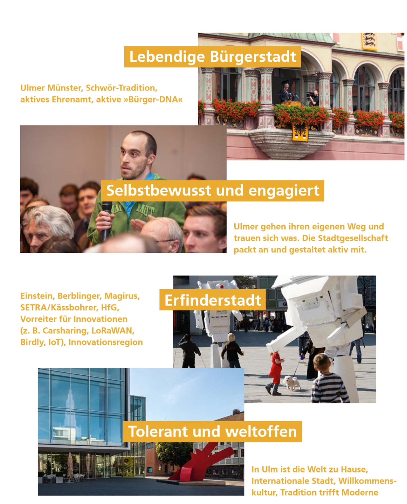

Ausgangslage und Herausforderungen¶
Intro¶
Wieso, Weshalb, Warum?¶
Das Thema Digitalisierung und Stadtentwicklung wird in Ulm seit über 10 Jahre in Projekten und Initiativen behandelt. In diesem Prozess konnte die Stadtverwaltung umfangreiche Erfahrungen aufbauen und gemeinsam mit der Politik erste strategische Ausrichtungen wie die Ulmer Zukunftsaufgaben definieren. Dabei tritt die Stadt Ulm als selbstbewusste Bürgerstadt auf und hat ambitionierte Grundsätze festgelegt. Nun gilt es diese Bemühungen zu bündeln, zu schärfen und eine Gesamtstrategie zu entwickeln.
Ein zentraler Bestandteil des Prozesses besteht im Austausch mit verschiedensten Stakeholdergruppen der Stadt - Fachabteilungen und Stadtwirtschaft, Wirtschaft und Wissenschaft und die Zivilgesellschaft. Mehr als 50 Stakeholder wurden identifiziert. Über verschiedene Formate werden diese während des Prozesses informiert und sind angehalten, beratend und zum Teil auch in der Umsetzung und Entscheidung mitzuwirken.
Für die Erstellung der Strategie wird zunächst eine genaue Analyse der städtischen Herausforderungen durchgeführt. Grundlage hierfür sind Gespräche, Workshops und Projekte mit der Bürgerschaft und allen Akteuren der Stadtgesellschaft. Diese werden durch drei wissenschaftliche Gutachten in den Bereichen Nachhaltigkeit, Stadtentwicklung und Systemtechnik ergänzt. Darauf aufbauend werden Visionen und Zielbilder abgeleitet werden. Ziel ist es, eine nachhaltige Stadtentwicklung für die nächsten 10 bis 15 Jahren zu gestalten. Während die Vision die langfristige Ausrichtung darlegt, werden die Zielbilder bestimmte Aspekte der smarten Stadt Ulm grafisch aufarbeiten und dabei unterstützen, die Idee zu kommunizieren und in der Bürgerschaft zu festigen.
Die Strategie setzt außerdem Schwerpunkte, indem sich die Stadt auf konkrete Handlungsfelder konzentriert. Diese geben übergreifende Antworten darauf, welche Potenziale die Digitalisierung konkret bietet, um das Leben in der Stadt zu verbessern. Entsprechend bildet die Strategie damit eine solide Grundlage für die Zukunft schaffen.
Smart City und Smart City Charta¶
Weltweit leben schon heute mehr als die Hälfte aller Menschen in Städten (Statista, 2018). Der Anteil wird sich bis 2050 auf zwei Drittel der weltweiten Bevölkerung erhöhen. Gleichzeitlich nehmen Städte die meisten Ressourcen in Anspruch. Während die Bündelung von Ressourcen und Menschen auf begrenztem Raum gesellschaftliche, ökologische und strukturelle Herausforderung darstellen, bieten sie gleichzeitig ein großes Hebel- und Skalierungspotential für mehr Nachhaltigkeit (WBGU , 2019, p. 197).
Ulm sieht die 17 globalen Ziele für nachhaltige Entwicklung der Agenda 2030 als geeigneten Kontext der Nachhaltigkeit (BMU, 2020). Sie beinhalten unter anderem Ziele für mehr Krisenresilienz, Ressourcen- und Energieeffizienz, mehr Nachhaltigkeit im Konsum- und Mobilitätsverhalten, wirtschaftliche Innovation und soziale Inklusion. Entsprechend bieten die Ziele auch Ansatzpunkte für die Herausforderungen der zunehmenden Urbanisierung. Digitale Lösungen eröffnen neue Chancen, um solche Ziele zu realisieren.
Der Begriff der Smart City ist unter anderem aus dem Kontext der nachhaltigen Stadtentwicklung entstanden (WBGU , 2019, p. 197). Das Bundesinstitut für Bau-, Stadt- und Raumforschung (BBSR) versteht unter Smart City die “ Aus- und Aufrüstung der Städte und ihrer Infrastrukturen mit digitaler Technologie und die Verknüpfung bisher getrennter Infrastrukturen oder ihrer Teilsysteme“ (BBSR, 2018). Diese Teilsysteme und Infrastrukturen sind beispielsweise Energie, Gebäude, Verkehr, Wasser und Abwasser. Entsprechend erweitert die Smart City „das Instrumentarium der nachhaltigen und integrierten Stadtentwicklung um technische Komponenten, sodass die Gesellschaft, der Mensch und seine Lebensgrundlagen auch zukünftig im Mittelpunkt stehen“ (BBSR, 2017, p. 11).
Die digitale Stadt führt zu Veränderungen in fast allen Bereichen des städtischen Lebens. Als Orientierung für die Gestaltung des digitalen Wandels wurde die Smart City Charta entwickelt (BBSR, 2017). Folglich verfolgt sie den Ansatz einer integrierten und nachhaltigen, am Menschen ausgerichteten Stadtentwicklung. Die Charta enthält zwei zentrale Ziele: (1) lebenswerte Städte für Menschen zu schaffen und (2) gleichermaßen Städte als Entwicklungsakteure anzuerkennen.
Diese beiden Ziele werden angesichts der weltweit zunehmenden Urbanisierung, Digitalisierung und Vernetzung künftig von zentraler Bedeutung sein. Denn es geht darum, wie wir in Zukunft leben wollen und wie die dafür nötige Handlungsfähigkeit und Gestaltungskraft der Kommunen gesichert und gestärkt werden kann. Die Stadt Ulm hat inhaltlich an der Smart City Charta mitgearbeitet und verpflichtet sich ebenfalls modellhaft aufzuzeigen, wie sie im kommunalen Handeln und in der Entwicklung unserer Städte verankert und zum Leben erweckt werden kann.
Um das übergeordnete Ziel - eine lebenswertere Stadt zu fördern und die beschriebenen Ziele zu erreichen - sind neben dem Technikeinsatz auch themen- und ressortübergreifendes Handeln erforderlich. Um dies zu erreichen, ist es wichtig, dass alle Akteure in einer Stadt - Verwaltung, Stadtwirtschaft, Wissenschaft, lokale Wirtschaft und nicht zuletzt Bürgerinnen und Bürger sowie die vielen Organisationen der Zivilgesellschaft - zusammenarbeiten.
Warum eine Smart City Strategie?¶
Die Stadt Ulm arbeitet bereits seit vielen Jahren in zahlreichen Projekten und mit vielen Maßnahmen an der Smart City (s. Anhang S. 36). Dadurch hat sich Ulm bereits intensiv mit digitalen Themen beschäftigt, wie zum Beispiel LoRaWAN und IoT, Datenplattform oder Datenethik.
Durch das erlangte Wissen ist Ulm sich zentraler Risiken im Zusammenhang mit Smart City bewusst. Diese Risiken sind beispielsweise, dass durch die Datenspeicherung ein Risiko für staatliche und private Überwachung besteht, dass es ein Risiko zur Abhängigkeit von großen Technologieanbietern gibt und dass Technologien nicht Zweck sondern Mittel zur Lösung von Stadtentwicklungsherausforderungen sein sollen (WBGU , 2019). Mittels der vorliegenden Strategie gilt es diese und weitere Risiken eingehend zu verstehen und durch strategische Steuerung zu vermeiden.
Des Weiteren durchdringt der digitale Wandel - also der Wandel der Städte hin zu Smart Cities - die gesamte Gesellschaft. Dieser Wandel birgt Gefahren der digitalen Spaltung (digital divide), welche zum Beispiel durch Aspekte wie Bildungsstand, Technikverständnis, soziales Milieu und Alter entstehen können. Infolgedessen sind insbesondere sozial schwache Räume/ Quartiere dem Risiko ausgesetzt zu Verlierern der digitalen Transformation werden. Auch Faktoren wie der Zugang zu Technologien und deren Nutzerfreundlichkeit müssen Beachtung finden. In der Smart City Stratege werden deswegen Maßnahmen definiert, um den gesellschaftlichen Zusammenhalt im digitalen Zeitalter zu gewährleisten. (Roman Soike, 2019)
Die smarte Stadt nutzt Informations- und Kommunikationstechnologien (IKT), um kommunale Infrastrukturen zu verknüpfen. Um diese zu etablieren sind Entscheidungen zur IKT-Auswahl und der zugrundeliegenden Systemarchitekturen zu treffen. Letztendendes werden diese Technologien allerdings auch ein Fundament legen (1) für die Absicherung des Zugangs zu (digital gestützten, sozialen) Leistungen der Daseinsvorsorge und (2) für die Erreichung urbaner Entwicklungs- und Nachhaltigkeitsziele legen. Zudem beeinflussen sie die Gestaltungsautonomie und Lebensqualität der Stadtgesellschaft. Deswegen setzen technologische Entscheidungen eine Kooperation mit verschiedensten Akteuren der Stadt voraus.
Um eine solche Kooperation zu fördern, braucht es Organisationsstrukturen, die interdisziplinäre und querschnittsorientierte Lösungen fördern. Gerade für die in Fachbereichen organisierten Verwaltungen, fordern solche Lösungsansätze einen außerordentlichen Aufwand. Die Smart City Strategie wird sich entsprechend auch damit auseinandersetzen, wie die Handlungsfähigkeit und Effizienz der Stadt und die Wahrung von Gemeinwohlinteressen bei der digitalen Transformation in der Organisation der Stadtregierung gestärkt werden kann.
Ein wesentlicher Bestandteil der organisationalen Veränderung ist nicht nur die Modernisierung kommunaler Entscheidungs-, Planungs- und Managementprozesse, sondern die immer zentraler werdende Beteiligung der Bürgerschaft. Für Ulm ist sie wichtig, um bei der Stadtplanung zwischen dem Versprechen größerer Nutzer- und Bedienerfreundlichkeit für die Individuen in vielen Lebensbereichen einerseits und den übergeordneten Interessen von Stadtentwicklung im Sinne des Gemeinwohls andererseits abwägen zu können.
Hervorzuheben ist vor allem auch die Bedeutung des kooperativen Prozesses. An der Strategie arbeiten alle Akteure der Stadt mit. Er dient dazu, ein gemeinsames Verständnis von den Herausforderungen, Chancen, Zielen und Schwerpunkten zu entwickeln. Nur so kann ein ganzheitlicher und inklusiver Prozess gewährleistet werden, der Niemanden zurücklässt und Impulse in alle Bereiche der Stadtgesellschaft leistet.
Mit der Entwicklung der Smart City Strategie wird ein zentraler Schritt für die Gestaltung der Ulmer Zukunft getan. Sie entsteht aber nicht auf der grünen Wiese, sondern basiert auf eine Vielzahl von Fachstrategien und -konzepten und hat den Anspruch diese zu bündeln, zu integrieren und Zusammenhänge herauszustellen. In diesem Kontext sind beispielhaft zu nennen: das Integrierte Stadtentwicklungskonzept 2019, Klimaschutzprogramm (GD 400/16), Mobilitätskonzept, die Kulturentwicklungsplanung und beispielhaft für die Verkehrspolitik ist der Verkehrsentwicklungsplan (VEP, 2013).
Nährboden und Projektumfeld: Bisherige Entwicklung zu einer digitalen Stadt¶
Ulmer Nährboden¶
 Ulm beschäftigt sich seit mehr als 10 Jahren intensiv mit den Themen der Digitalisierung im Zusammenhang mit Stadtentwicklung. Dies machen die vielzähligen Projekte zur Digitalisierung deutlich. Eine Übersicht darüber finden Sie im Anhang ab Seite 34. Zudem arbeitet die Stadt strategisch und kontinuierlich an zentralen Themenfeldern, die den Nährboden für den Erfolg der smarten Stadt legen. Diese Felder sind die (1) Teilhabe der Bürgerschaft, (2) Initiativen, (3) Nachhaltige Strukturen, (4) Eingesetzte Verfahren und Methoden und (5) die zugrundeliegende IT-Infrastruktur.
Ulm beschäftigt sich seit mehr als 10 Jahren intensiv mit den Themen der Digitalisierung im Zusammenhang mit Stadtentwicklung. Dies machen die vielzähligen Projekte zur Digitalisierung deutlich. Eine Übersicht darüber finden Sie im Anhang ab Seite 34. Zudem arbeitet die Stadt strategisch und kontinuierlich an zentralen Themenfeldern, die den Nährboden für den Erfolg der smarten Stadt legen. Diese Felder sind die (1) Teilhabe der Bürgerschaft, (2) Initiativen, (3) Nachhaltige Strukturen, (4) Eingesetzte Verfahren und Methoden und (5) die zugrundeliegende IT-Infrastruktur.
Teilhabe der Bürgerschaft¶
Ulm versteht sich als lebendige Bürgerstadt. Die Teilhabe der Bürgerschaft bildet die Grundlage, den Weg der Digitalisierung erfolgreich und vor allem nachhaltig zu beschreiten. Sie legt das Fundament, um Berührungsängste abzubauen und echten Mehrwert zu schaffen. Nur so kann sichergestellt werden, dass die Digitalisierung sich nutzerzentriert und zum Wohl der Gemeinschaft entwickelt statt zum Selbstzweck zu werden.
Einen wesentlichen Teil zur Bürgerbeteiligung trägt das Verschwörhaus bei. Hierbei handelt es sich um ein deutschlandweites Leuchtturmprojekt für netzkulturelle Programme und Diskurse, welches die breite Stadtgesellschaft befähigen möchte, auf spielerische und experimentelle Weise digitale Fähigkeiten zu erweitern und eigene Ansätze zu entwickeln. Durch die vielen Initiativen, die sich hier zusammenfinden, wird in Ulm Citizen Science gelebt. Beispiele hierfür sind das Ulmer LoRaWAN, die Münster Platine und diverse IoT-Anwendungen.
Teilhabe wird auch durch digitale und analoge Angebote angeregt und vorangetrieben. Digital kann die Bürgerschaft sich auf der Seite zukunftsstadt-ulm.de aktiv zu bestimmten Fragen äußern und gleichzeitig mit der Digitalen Agenda in den Dialog treten. Etablierte analoge Beteiligungsformate sind mobile Vor-Ort Dialoge, Bürgerwerkstätten und Reallabore.
Darüber hinaus bot der Ausstellungsraum “M25” die Möglichkeit, sich über die Digitalisierung zu informieren und diese auch erleben (z.B. über einen Flug mit dem “Birdly” über das Ulm des Jahres 1890). Die Räumlichkeiten wurden darüber hinaus für Informationsveranstaltungen und Debatten genutzten, was bei der Bürgerschaft breiten Anklang gefunden hat. Hinzu kommt im Jahr 2020 ein Kreativraum, in dem digitale Lösungen, wie beispielsweise digitale Workshop-Formate, getestet werden können.
Bei der Erarbeitung der Strategie wird auf zwei zentrale Beteiligungsformate zurückgegriffen. Zum einen wird eine Beteiligung über GitHub angeboten, was im letzten Schritt ermöglicht, die Strategie als Creative Common zertifizieren zu lassen. Zum anderen ist eine Beteiligung über das Beteiligungsportal zukunftsstadt-ulm.de möglich, über das zentrale Thesen der Strategie diskutiert werden können.
Nachhaltige Strukturen¶
Nachhaltige Strukturen sind Voraussetzung für eine leistungsfähige und dauerhafte Verankerung im städtischen Handeln. Seit Jahren treibt der Ulmer Oberbürgermeister Gunter Czisch das Thema Digitalisierung als Markenbotschafter sowohl nach innen als auch nach außen an. Unterstützt wird er darin auch durch die lokalen Politiker und Stadträte. Dies zeigen die zahlreichen richtungsweisenden Beschlüsse, die bereits im Ulmer Gemeinderat gefasst wurden.
Einen wichtigen Meilenstein für die Entwicklung der Smart City wurde mit der Erschaffung der Geschäftsstelle Digitale Agenda erreicht. Sie gehört zum Bereich des Oberbürgermeisters und unterstützt die Beantwortung wesentlicher Zukunftsfragen vor dem Hintergrund digitaler Mehrwerte. Sie entwickelt und testet innovative, digitale Lösungen für und mit der Ulmer Bürgerschaft und der Ulmer Stadtverwaltung. Sie ist zuständig für den digitalen Stadtentwicklungsprozess und berät die Digitale Agenda die Stadtverwaltung, um mit digitalen Lösungen schnellere, nutzerzentrierte und effizientere Services für die Bürgerschaft zu bieten. Mit dem Verschwörhaus und dem Kreativraum im Gebäude der digitalen Agenda gibt es Orte zum Testen und Experimentieren für die Bürgerschaft und Mitarbeiter und Mitarbeiterinnen in der Verwaltung. Neben der Digitalen Agenda, ist der Innovationsausschuss ein wichtiges Gremium zu Digitalthemen. Er wirkt beratend bei der konzeptionellen Ausrichtung der Stadtpolitik und Stadtverwaltung in Zukunftsfragen im Bereich der Digitalisierung mit (GD 025/18). Ihm gehören der Oberbürgermeister, Gemeinderatsvertreter und Sachverständige an.
Um die Politik und Verwaltung frühzeitig in den Prozess und in die Entscheidungen rund um die Digitalisierung einzubinden, hat es auch sich bewährt, querschnittsorientierte Koordinierungsgruppen und Lenkungsgruppe einzurichten. Unter anderem über diese Formate, werden alle Abteilungen der Stadtverwaltung und die Stadtwirtschaft kontinuierlich über laufende Prozesse informiert, darin eingebunden und beteiligt. Dieses Vorgehen ermöglicht es ganzheitliche Entscheidungen zur Digitalen Transformation zu treffen und einen Kulturwandel innerhalb der Verwaltung und der Bürgerschaft anzustoßen.
Ein Fachbeirat aus bundesweiten Experten aus den Bereichen Stadtentwicklung, Technologie und Ethik begleitet und berät bei der Entwicklung der Strategie und in der Umsetzungsphase.
Verfahren und Methoden¶
Innerhalb der Digitalen Agenda ist seit deren Entstehung Expertise und Methodenkompetenz unter anderem zuVerfahren der nutzerzentrierten Entwicklungen von Services, sowie der Entwicklung quartiersbezogener Innovationen aufgebaut worden. Beide sind essenziell für die Ulmer Herangehensweise und fördern eine starke Fokussierung auf die konkreten Herausforderungen der Bürgerinnen und Bürger.
Die konkreten Herausforderungen werden in verschiedenen städtischen Quartieren verortet. Sie sind modellhafte Testräume (Reallaboren) für die Einführung digitaler Infrastrukturen und smarter Anwendungen. Die Stadt Ulm sieht darin einen wichtigen Beitrag zur Förderung der Akzeptanz gegenüber digitalen Innovationen. Dieses Vorgehen stellt sicher, dass die getesteten Lösungen übertragbar sind und neuen Mehrwert für eine lebenswerte Stadt schaffen.
Bei der Auswahl der Technologien achtet Ulm darauf, dass diese dem Digitalen Servicestandard (BMI, 2020) entsprechen - also Best Practice Grundsätzen bei der Gestaltung und Bereitstellungen von Diensten folgen. Die Stadt Ulm setzt darauf, dass Technologien dezentral organisiert werden und auf Open Source Software basieren. Bei Open Source Software ist der Quelltext einsehbar, sodass sich ein Programm prüfen, korrigieren und erweitern lässt. Dezentrale Technologien verwalten Daten an verschiedenen Stellen. Sie haben also keinen Single Point of Failure, was sie robuster, effizienter, skalierbarer und demokratischer macht. Beispiele für dezentrale digitale Infrastrukturen sind Speicher für offene Daten, Bottom-up-Networking, Ad-hocWLAN, zusammengeschlossene Clouds und dezentrale Datenverwaltungssysteme. Auch dezentral gesteuerte Energiesystem zählen dazu.
Beides trägt sowohl zur Resilienz der Verwaltung als auch zur Demokratisierung von Digitalisierungsprozessen bei. Zusätzlich werden auf diese Weise wirksam sogenannte Vendor Lock-in-Effekte vermieden, also die Abhängigkeit der Bürger von einem zentralen IT-Anbieter. Die Auswahl soll mittel- und langfristig auch dazu führen, dass Innovation aus der Bürgerschaft (Bottom-up) und im Co-Kreationsprozess lokalen Akteuren entstehen (Open Innovation) – ganz nach dem Motto von Ulm für Ulm.
Die Stadt Ulm wendet verschiedenste Methoden an, um die Zivilgesellschaft in die Gestaltung der Smart City Strategie einzubeziehen. So war Ulm eine der ersten Gemeinden in Corona-Zeiten, die einen YouTube-Livestream organisiert hat, indem sie über die Einführung der Corona Warn-App aufgeklärt hat. In dem Livestream haben Politik, Verwaltung und Wissenschaft gemeinsam zur App aufgeklärt und live mit den Bürgerinnen und Bürgern diskutiert.
IT-Infrastruktur¶
Das Rückgrat einer zukunftsfähigen digitalen Stadt bildet eine ausgebaute Basisinfrastruktur. Die Stadt Ulm investiert daher seit vielen Jahren über die Stadtwerke große Summen in den Breitbandausbau im Stadtgebiet. Zuletzt konnte im größten städtischen Industriegebiet ein flächendeckender Ausbau fertiggestellt werden. Im Frühjahr 2020 erging zudem der Startschuss für den flächendeckenden Ausbau in der Ulmer Innenstadt. Die Stadtwerke setzen hier auf frühzeitige Information und Einbindung der Bürgerschaft. Weiter soll über rechtzeitige Abstimmung mit anderen Netzanbietern eine optimale Auslastung dieser Infrastruktur sichergestellt werden („Open Access“).
Auch das Thema 5G wird durch die Stadtverwaltung aktiv begleitet: Im Rahmen des Innovationswettbewerbs des Bundesministeriums für Verkehr und Digitale Infrastruktur sollen nutzerorientierte Anwendungen für den Einsatz im Rettungswesen erarbeitet werden. Auch diese Technologie setzt auf einer leistungsfähigen Breitbandinfrastruktur auf. Zudem zählt Ulm zu den ersten Städten weltweit, die ein flächendeckendes LoRaWAN-Netz betreiben und dies offen, frei und kostenlos der Bürgerschaft zur Verfügung stellen (lora.ulm-digital.com/#map). LoRaWAN (engl. Long Range Wide Area Network) ist eine optimierte Kommunikationsarchitektur mit besonders energieeffizienter Datenübertragung über Funktechnik. Sie wurde speziell für den Einsatz von drahtlosen, batteriebetriebenen Geräten für das Internet der Dinge optimiert, um z. B. für Sensoren eine möglichst lange Batterielaufzeit zu gewährleisten.
Die sich generierenden Daten fließen auf einer Datenplattform zusammen. Die Datenplattform ist Grundlage für den urbanen Datenraum, also einem „digitalen Raum, welcher die relevanten Daten für den kommunalen Politik-, Verwaltungs- und Wirtschaftsraum enthält sowie alle Informationen, […] um die Daten auffindbar und umgehend nutzbar zu machen“ (Ina Schieferdecker, 2018, p. 15). Auf Basis eines urbanen Datenraums können kommunale, datenbasierte Geschäftsmodelle auf lokaler Ebene geschaffen werden. Damit leistet der Datenraum einen Beitrag zur kommunalen Datensouveränität. Insgesamt ist diese Infrastruktur entscheidend für die Stärkung des Wirtschaftsstandortes Ulm und entspricht einem zentralen Ulmer Grundsatz: selber machen, nicht auf andere warten und technologisch souverän sein!
Die Ulmer Digitalprojekte¶
Die Stadt Ulm ist Teil der ersten Staffel des Förderprogramms „Modellprojekte Smart Cities“, in dessen Kontext die vorliegende Smart City Strategie entwickelt wurde. Sie baut auf einer Reihe von Digitalprojekten auf. Insbesondere die Förderprojekte Zukunftskommune@bw und Zukunftsstadt 2030 haben deutlich zur digitalen und nachhaltigen Stadtentwicklung beigetragen. Auf die wesentlichsten Aspekte wird in den folgenden Paragraphen eingegangen. Eine Übersicht über weitere Digitalprojekt finden Sie im Anhang.
Das Projekt Zukunftskommune@bw wurde vom Land Baden-Württemberg gefördert. Es wurden digitale Angebote zu geschaffen, die clever, sicher, nachhaltig, offen und für alle Bürgerinnen und Bürger sind. Diese Angebote sind in sechs Themenfeldern zu verorten: (1) Leben im Quartier, (2) Mobilität, (3) Umwelt, Energie, Versorgung und Entsorgung, (4) Handel, (5) Geschäftsmodelle und (6) Datenplattform. Letzteres Themenfeld stellt ein Fundament der Ulmer Smart City dar. Es ermöglicht eine schrittweise übergreifende und intelligente Verknüpfung verschiedener Daten und Dienstleistungen des alltäglichen Lebens, die die Bürgerschaft komfortabel mit der Stadt verbindet und Potenzial für neue Dienstleistungs- und Wertschöpfungsinnovationen für die ansässigen Unternehmen schafft.
Weiterhin hervorzuheben ist die Förderung als Zukunftsstadt 2030. In diesem vom Bundesministerium für Bildung und Forschung (BMBF) geförderte Projekt entstanden vier weitere Fundamente der Ulmer Smart City, nämlich die online (a) Bürgerbeteiligungsplattform zukunftsstadt-ulm.de, (b) das Ulmer Datenethik-Konzept, (c) der Urbane Datenraum Ulms, als auch die (d) LoRaWAN-Infrastruktur.
Post Corona Stadt¶
Die Covid-19 Pandemie führte auch der Stadt Ulm vor Augen, wie schnell sich der Alltag und feste Gegebenheiten verändern können. Die Pandemie ist ein VUCA -Phänomen, nämlich das Symptom einer immer unbeständigeren, unberechenbaren, komplexeren und mehrdeutigen Umgebung. Im Laufe der Pandemie wurden Erkenntnisse, Erfahrungen und Ideen gesammelt, wie Städte resilienter werden können. Einige davon sollen kurz vorgestellt werden.
Ein Ansatz ist in der Schaffung temporärer, kostengünstiger Plätze zu sehen, die physisches soziales Distanzieren in städtischen Umgebungen wie Straßen, Gassen, freien Flächen und Parkplätzen ermöglichen. (City of Baltimore, 2020). Es kann davon ausgegangen werden, dass die sozialen Abstandsregeln langfristig dazu führen werden, dass eine deutliche Reduktion der Flächenproduktivität in Gebäuden, als auch weiter eingeschränkte Einkaufserlebnisse die Folge sind. Wie Ulm mit innovative Handels-, Dienstleistungs- und Veranstaltungskonzepte darauf reagiert, wird aktuell und auch in Zukunft erforscht und getestet. (Zelt, 2020) Auch die Themen Gesundheit und Bildung rücken im Kontext der Pandemie in den Vordergrund. Die Digitalisierung bietet umfangreiche Chancen, um trotz der sozialen Distanz gute Serviceleistungen erbringen zu können. Dies wirft die Frage auf wie Basisdienstleistungen geleistet werden können ohne soziale Disparitäten im urbanen Raum weiter zu verschärfen und anderweitig aufzuwerfen.
Des Weiteren kann der Mobilitätsalltag mit smarten Mobilitätskonzepten sicherer und nachhaltiger gestaltet werden, nämlich indem der Mix der urbanen Verkehrsträger, um eine neue räumliche Ausgeglichenheit für die Nutzung des öffentlichen Raumes zu schaffen. Ob In Ulm improvisierte Radwege auf Straßen (Pop-Up-Bike-Lanes, (Müller, 2020).) denkbar und welche weiteren Lösungen sinnvoll sind, gilt es zu beleuchten.
Das Wuppertal Institut sieht voraus, dass eine zukunftsfähige Stadt künftig „näher“, „öffentlicher“ und „agiler“ sein muss, um widerstandsfähig zu bleiben. Näher bezieht sich dabei auf: lokale Solidarität, die Bedeutung von Wirtschaftsstrukturen vor Ort, die Qualität von Erholungsräumen in unmittelbarer Nähe wieder zu entdecken. Öffentlicher bezieht sich darauf, die Kommunen als Garant der Daseinsvorsorge zu stärken und Nachhaltigkeit und gesunde Bürger zusammen zu denken. Agil bezieht sich darauf, die sozialen und kreativen Potentiale der Stadt durch Digitalisierung zu nutzen. (Schneidewind, et al., 2020) Entsprechend wird auch Ulm sich die Frage stellen: Welche (digitalen) Gestaltungsformen Ulm nutzen möchte, um in den Bereichen Handel, Bildungseinrichtungen, Arbeitsplatzgestaltung und Administration krisenfest zu sein und dabei gesellschaftliche und wirtschaftliche Verwerfungen weitestgehend begrenzt? Diese und weitere Fragen fließen in die Entwicklung der Smart City Strategie der Stadt Ulm ein. Sie soll einen Beitrag leisten, um aus der Perspektive der Smart City, Antworten für eine Bewältigung bzw. einen Umgang mit der Pandemie zu finden.
Ulmer Weg und Ulmer Werte¶
Der Ulmer Weg verbindet Lebensqualität und bürgerschaftliche Tradition mit wirtschaftlicher Perspektive – sichtbar und erfolgreich.

Die Ulmer Bürgerschaft hat in der Vergangenheit viel geleistet und zeichnet sich durch ihre eigene Art aus. Eine Meisterleistung ist beispielsweise der über 200-Jahre andauernde Bauprozess des Ulmer Münsters, welches allein durch die Ulmer Bürgerschaft gebaut wurde und das Wahrzeichen der Stadt ist. Ein weiteres Zeichen für die Emanzipation der Bürgerschaft ist der Schwörmontag. An diesem Tag wird der Rechenschaftsbericht des Oberbürgermeisters gegenüber den Bürgerinnen und Bürgern abgelegt - eine Tradition, die sich bis ins Jahr 1345 zurückverfolgen lässt. Auch die Ulmer Hochschule ist aus einer Bürgerinitiative in den 60iger Jahren entstanden. Um diese aktive Bürgerschaft aufrecht zu halten, unterstützt die Stadt beispielsweise mit dem Verschwörhaus, den Kompetenzaufbau der Bürgerschaft in Bezug auf Themen rund um die Digitalisierung.
Selbstbewusst und engagiert Die Ulmer Bürgerschaft zeichnet sich durch ein breites Engagement in Vereinen und Verbänden, Kirchen, karitativen und anderen gemeinnützigen Organisationen aus. Dieses Engagement soll auch in einer immer technologischeren Welt aufrechterhalten werden. Deswegen sind die Grundsätze der Ulmer Digitalisierungsstrategie: offen, für alle, clever und nachhaltig. Außerdem setzt Ulm auf technologische Souveränität, indem sich die Stadt die Unabhängigkeit von digitaler Infrastruktur und Diensten behält und auf Open-Source-Lösungen setzt.
Erfinderstadt Ulm wurde auch durch Berühmtheiten geprägt wie Albrecht Berblinger - Erfinder und Flugpionier, Albert Einstein - Entdecker der Relativitätstheorie und Conrad-Dietrich Magirus - Technologiepionier und Unternehmer. Aber auch darüber hinaus bietet Ulm Platz für zahlreiche bekannte Unternehmen, wie die 1844 gegründete Seeberger GmbH, Siemens AG und die Breuer GmbH. Die digitale Transformation wird den Erfindergeist der Stadt brauchen, denn die Karten in Bezug auf die Standortpolitik und Stadtentwicklung werden mit der Digitalisierung neu gemischt.
Tolerant und weltoffen In Ulm leben mittlerweile über 140 verschiedene Kulturen friedlich zusammen - mehr als jeder zweite Einwohner hat Wurzeln in einem anderen Kulturkreis. Ulm ist Wissenschaftsstadt und befindet sich in einer sehr wirtschaftsstarken Region. Beide Kompetenzen sind für die neuen Stadtbürger die Hauptgründe, um nach Ulm zu ziehen. Ulm möchte sich diese Offenheit bewahren, denn sie bildet ein Fundament für das Gemeinwohl der Stadt.
Smart City Vorbilder¶
Ulm steht in seinen fortschrittlichen Bestrebungen und Ideen in Bezug auf die smarte Stadtentwicklung nicht allein da. Viele, vor allem europäische Städte haben uns inspiriert. Beispielhaft gehen wir auf drei Städte ein und zeigen, was uns inspiriert hat.
So stellt sich Amsterdam dadurch hervor, dass die Stadt als Erprobungsraum innovativer Lösungen den Bürgern, Wissenschaft und Unternehmen angeboten wird. Dadurch möchte die Stadt erreichen, bis Jahr 2040 ein nachhaltig und wirtschaftlich starker Standort zu werden. Auch Ulm möchte die Stadt in ein Reallabor umwandeln, wo Smart City Lösungen für die Bürgerschaft greifbar und vor allem nutzerzentriert entwickelt werden.
Für Barcelona dient die Smarte Stadt der Zukunft dem Gemeinwohl und somit der Bürgerschaft. Sie befähigt die Verwaltung, Bürgerschaft und die lokale Wirtschaft darin, die Möglichkeiten der Smarten Stadt zu nutzen. Indem sich Ulm hier ein Vorbild nimmt, beabsichtigt die Stadt den Ulmer Nährboden, insbesondere in Bezug auf die Teilnahme der Bürgerschaft, weiter zu festigen (s. 9) und die Ansätze der Smart City Charta (s. 7) umzusetzen.
Eindoven setzt den Smart City Fokus auf die Smart Society. Damit sieht sie die Bürgerschaft als Schlüssel zur Lösung der wichtigsten Herausforderungen. Um bei einer zunehmend vernetzten Gesellschaft, das öffentliche Interesse weiterhin zu wahren und Datenschutz zu gewährleisten, entwickelt die Stadt Eindhoven die Smart Society Charta. Die Charta legt wesentliche IoT-Architektur-Prinzipien und -Richtlinien fest (Eindhoven, 2020). Ulm möchte sich unter anderem für die Umsetzung der Ulmer Datenplattform inspirieren lassen. Für die Entwicklung der Ulmer Smart City Strategie sind diese Erkenntnisse und Erfahrungen sehr wichtig.
Gleichzeitig baut die Stadt auch auf den Erkenntnissen eigenen Erfahrungen und Kultur auf. So gibt der “Ulmer Weg” vor, dass wir die Smart City nicht technologiegetrieben betrachtet werden soll. Stattdessen soll die Technologie im Sinne der Smart City Charta und für eine nachhaltige Stadtentwicklung und Nachhaltigkeit eingesetzt werden. Außerdem geht es im Ulmer Weg darum Transparenz zu leben und die Bürgerschaft und weitere Akteure am Entstehungsprozess zu beteiligen. Ulm ist also für Inspiration offen, weiß aber um seine lokalen Besonderheiten und ist bestrebt, diese in die Smart City Strategie einzuweben.
Unsere Ausgangslage und Herausforderungen¶
Die Smart City Strategie Ulms baut auf vergangenen Entwicklungen und die gegenwärtige Situation der Stadt auf. Um dies zu erreichen wurden bestehende Konzepte und Gutachten analysiert und Gespräche mit der Stadtverwaltung und den Stadtwerken geführt. Auf diese Weise generiert die Strategie kontext-spezifische Lösungen für die Stadt und somit - echten Mehrwert. Im folgenden Kapitel werden die gegenwärtige Situation der Region und der Stadt beschrieben und die Ulmer Zukunftsaufgaben herausgearbeitet.
Region¶
 Ulm ist eine sehr gut vernetzte Stadt und tief verwurzelt mit der Donau-Iller Region, in der sie sich befindet. Es handelt sich hierbei um eine Ländergrenzen überschreitende Planungsregion und Regionalverband in Baden-Württemberg und Bayern. Sie umfasst den Stadtkreis Ulm, den Alb-Donau-Kreis und den Landkreis Biberach in Baden-Württemberg sowie die kreisfreie Stadt Memmingen, den Landkreis Günzburg, den Landkreis Neu-Ulm und den Landkreis Unterallgäu in Bayern.
Die sehr gute Verkehrsanbindung und die Lage im Süden unterstützt die Region darin eine der wirtschaftlich dynamischsten und gründungsaktivsten Regionen Deutschlands zu sein. Gebündelt werden die wirtschaftlichen, sozialen, kulturellen und bildungsrelevanten Interessen der Region durch den Verein zur Förderung der Innovationsregion Ulm – Spitze im Süden e.V. Sie bildet die Klammer zwischen den beiden Städten Ulm und Neu-Ulm und den umgebenden Landkreisen.
Ulm ist eine sehr gut vernetzte Stadt und tief verwurzelt mit der Donau-Iller Region, in der sie sich befindet. Es handelt sich hierbei um eine Ländergrenzen überschreitende Planungsregion und Regionalverband in Baden-Württemberg und Bayern. Sie umfasst den Stadtkreis Ulm, den Alb-Donau-Kreis und den Landkreis Biberach in Baden-Württemberg sowie die kreisfreie Stadt Memmingen, den Landkreis Günzburg, den Landkreis Neu-Ulm und den Landkreis Unterallgäu in Bayern.
Die sehr gute Verkehrsanbindung und die Lage im Süden unterstützt die Region darin eine der wirtschaftlich dynamischsten und gründungsaktivsten Regionen Deutschlands zu sein. Gebündelt werden die wirtschaftlichen, sozialen, kulturellen und bildungsrelevanten Interessen der Region durch den Verein zur Förderung der Innovationsregion Ulm – Spitze im Süden e.V. Sie bildet die Klammer zwischen den beiden Städten Ulm und Neu-Ulm und den umgebenden Landkreisen.
Aus den Herausforderungen ergeben sich drei Zukunftsthemen für die Region, nämlich Mobilität, Energie und Digitalisierung. Mit dieser Schwerpunktsetzung bündelt es die Aktivitäten und fördert Zusammenarbeit. In Bezug auf die Digitalisierung wurde beispielsweise das Digitalisierungszentrum Ulm | Alb-Donau | Biberach gegründet. Hier werden technische Infrastruktur und Know-how zur Erprobung und Entwicklung neuer digitaler Lösungen, Produkte und Geschäftsmodelle für Unternehmen aller Branchen zur Verfügung gestellt. Dazu werden unter anderem auch Räumlichkeiten für Experimentierräume, Informationsräume und Coworking Spaces bereitgehalten.
Aus Raumplanungsperspektive ist Ulm untrennbar mit der Nachbarschaftsstadt Neu-Ulm verbunden. Aus diesem Grund sind verschiedene Themenbereiche zusammen verwaltet. Dies zeigt beispielsweise der im Jahr 2000 ins Leben gerufene Stadtentwicklungsverband Ulm/Neu-Ulm, welche als grenzüberschreitende Wirtschaftsförderungseinrichtung fungiert.
Mit der Etablierung des Verbandes wollen beide Städte die negative Konkurrenz der Vergangenheit überwinden, die Wettbewerbsfähigkeit stärken, vorhandene Flächenentwicklungspotentiale gemeinsam nutzen und somit zur Sicherung und Schaffung von Arbeitsplätzen und der Stärkung des regionalen Bewusstseins beitragen.
Zukunftsaufgaben der Stadtentwicklung¶

Ulm zählt zu den lebenswertesten Städten in Deutschland und Europa und ist ein bedeutender Industriestandort und Teil einer der wirtschaftlich stärksten Regionen Europas. Die Stadt kooperiert als Wissenschaftsstadt in einem weit gespannten Netzwerk aus Universitäten, Hochschulen, Kliniken und Forschungseinrichtungen. Industrie und Wissenschaft arbeiten ebenfalls stark verzahnt zusammen. In Zeiten des konstanten Wandels, gilt es diese Lebensqualität und Wirtschaftsstärke aufrecht zu erhalten. Beides soll durch den Ulmer Grundsatz, die Digitalisierung als Chance und als Querschnittsthema der integrierten Stadtentwicklung zu betrachten, aktiv zu gestalten.
Vier übergreifende und querschnittsorientierte Zukunftsaufgaben sind für die Stadt von besonderer Bedeutung: (1) Ulm im Wandel, (2) Wachsende Stadt, (3) Nachhaltige Stadtentwicklung, Klimaschutz und Kreislaufwirtschaft, und (4) Urbaner Datenraum, technologische Souveränität und Datenethik. Herausforderungen und Entwicklung als Konsequenz der Corona Pandemie werden hier aufgegriffen. Jede der vier Aufgaben wird in den folgenden Abschnitten genauer beleuchtet.
Um diese Aufgaben zu lösen, möchte Ulm auf seine eigenen Stärken bauen und diese weiterentwickeln. Dazu zählen zum Beispiel (a) die aktive Bürgerschaft, (b) die Forschungskompetenz ausgedrückt in der Wissenschaftsstadt, (c) das engagierte Unternehmertum und (d) das querschnittsorientierte und mutige Herangehen an die Herausforderungen. Die Zukunftsaufgaben sollen exemplarisch in ausgewählten Quartieren bearbeitet werden. Ulm ist sich dessen bewusst, dass Veränderungen Zeit brauchen, um sich durchzusetzen und um von der Stadtgesellschaft akzeptiert zu werden. Man rechnet mit 10 bis 15 Jahren bis disruptive Erfindungen im Markt ankommen. Besonders die Digitalisierung wird vielfältige soziale, kulturelle und strukturelle Veränderungen mit sich bringen. Diese gilt es zu gestalten und als Lösungsansatz für die Herausforderung der Stadt zu nutzen. Dafür braucht es Ausdauer, Kreativität, aber auch sichtbare Erfolge, die bei der Bürgerschaft Mut und Zuversicht stiften.
Ulm im Wandel¶
Die Digitale Transformation wird auch in der Bürgerschaft Veränderungen bewirken. Schon heute verändert sie das soziale Miteinander, welches zunehmend im virtuellen Raum stattfindet. Diese Tendenz hat mit der Corona-Pandemie stark zugenommen. Es stellt sich immer mehr die Frage, wie gesellschaftliche Teilhabe und der soziale Zusammenhalt unterstützt und gefördert werden kann und welche Chancen sich für das Zusammenleben und die Nachbarschaft bieten (s. Handlungsfelder S. 53). Alle Menschen in Ulm sollen zu einer selbstbestimmten und souveränen Teilhabe am gesellschaftlichen Alltag befähigt werden. Dazu ist ein kontinuierlicher persönlicher Erwerb digitaler Kompetenzen, also lebenslanges Lernen, unerlässlich. Die Vermittlung dieser Kompetenzen begleiten die Bürger ein Leben lang: beginnend in der Schule, über die Aus- und Weiterbildung oder im Studium, im Beruf und darüber hinaus. Die Kultureinrichtungen in der Stadt verstehen sich als Impulsgeber und einladende Orte. Sie nutzen digitale Möglichkeiten für die Entwicklung neuer Angebote und bieten niederschwellige Zugänge. Benachteiligte Menschen sollen unterstützt, der solidarische Zusammenhalt gestärkt werden und gesellschaftliche Barrieren abgebaut werden. Unabhängig von sozialer Herkunft, Handicaps, Sprache sowie Bildungs- und Einkommensniveau sollen individuelle Entwicklungschancen verbessert werden.
Wachsende Stadt¶
Seit über 10 Jahr erfährt Ulm ein rasantes Bevölkerungswachstum. Im Zeitraum von 2012 bis 2018 ist die Zahl der sozialversicherungspflichtigen Beschäftigten in Ulm um 6 Prozent auf 126.000 Einwohner angestiegen. Dieses Wachstum wird mit dem Ausbau der ICE-Hochgeschwindigkeitsstrecke, welche bis 2022 fertiggestellt sein wird, weiter zunehmen. Der Grund dafür ist, dass die Stadt dadurch noch näher an die Metropolregionen Stuttgart und München heranrückt. Außerdem zieht die prosperierende Wirtschaft zahlreiche Pendler in die Stadt.
Die steigende Zahl an Einwohnern hat in den vergangenen Jahren zu einer Nutzungskonkurrenz zwischen Wohnungs- und Gewerbefläche geführt. Der ansteigende Personen- und Güterverkehr und die Nähe zu den Metropolregionen stellt die Stadt vor die zentrale Frage: Wie kann bei knapper Flächenverfügbarkeit angemessen Wohn- und Gewerberaum zur Verfügung zu gestellt, ein zukunftsgerichtetes, nachhaltiges Mobilitätskonzept entwickelt und die Innovationskraft der Wirtschaft aufrechterhalten werden.
Die Digitalisierung im Zusammenhang mit Wohn- und Gewerberaum kann dabei unterstützen, die Nutzung von Räumlichkeiten zu verdichten. Dies veranschaulicht der digitale und mobile Arbeitsplatz verbunden mit dem Homeoffice. Auch Multifunktionsorte verbunden mit Co-Working Spaces führen zur Verdichtung der Raumnutzung. Die beschriebenen Ansätze haben mehrere Vorteile: sie reduzieren das Pendler-Aufkommen, sie verbessern die Vereinbarkeit von Beruf, Freizeit und Familie und sie verlagern die Kaufkraft zurück an den Wohnort oder die Innenstadt. Sie haben also das Potential das Gemeinwohl zu steigern.
Nachhaltige Mobilitätskonzepte beziehen sich auf intelligente, intermodale Mobilitätslösungen, die die Umwelt und Ressourcen schonen. Intelligente und bedarfsgerechte Mobilitätsdienstleistungen beabsichtigen die Nutzung des ÖPNV attraktiver machen und Mobilitätslösungen bedarfsgerecht zu einer individualisierten Mobilitätskette zu kombinieren. Im Ergebnis soll der Individualverkehr reduziert und gezielter durch die Stadt geleitet werden. Um den Wohlstand der Stadt aufrecht zu erhalten, braucht es eine starke lokale Wirtschaft. Diese sollte die Digitalisierung als Chance sehen, um neue Geschäftsmodelle entwickeln. Gleichzeitig sollte sich die Wirtschaft generationengerecht ausrichten und sich an den nachhaltigen Entwicklungszielen orientieren. In diesem Bestreben sollten die Wissenschaft und die Wirtschaft ihre Kooperationen und Vernetzungen weiter intensivieren und ausbauen. Auch die Bürgerschaft sollte in diesem Bestreben einbezogen werden mit dem Ziel, dass Innovationen nutzerorientiert sind und sichtbar und erfahrbar gemacht werden. Ein Good-Practice Ansatz ist dafür die Stadt als Reallabor zu nutzen. Die Smart City Projekte und Aktivitäten der Stadt bieten dafür den geeigneten Rahmen.
Nachhaltige Stadtentwicklung, Klimaschutz und Kreislaufökonomie¶
Die globalen und lokalen Entwicklungen zeigen immer deutlicher, dass Kommunen resilienter werden müssen, um sich an die Veränderungen der Zeit anpassen zu können. Digitalisierung bietet dabei zusätzlichen Chancen, dies zu erreichen. Eine nachhaltige Werteorientierung ist dabei wegweisend, um krisenresilient zu werden. Nachhaltigkeit versteht sich als ganzheitlicher Ansatz indem ein Gleichgewicht zwischen sozialen, ökologischen und ökonomischen Aspekten hergestellt wird. Dies ist für die Stadt Ulm bei der Stadtentwicklung richtungsweisend. Klimaschutz und die Unterstützung einer Kreislaufökonomie sind dafür unerlässlich.
Bei dieser Zukunftsaufgabe orientiert sich die Stadt an den nachhaltigen Entwicklungsziele der Vereinten Nationen, am Hauptgutachten: Unsere gemeinsame digitale Zukunft des (WBGU , 2019), und den Prinzipien der Kreislaufökonomie basierend auf der Ellen McArthur Stiftung (2020). Das Thema nachhaltige digitale Stadtentwicklung betrifft insbesondere das Ziel 11 - Nachhaltige Städte und Gemeinden. Hier geht es unter anderem um Energie- und Ressourceneinsparung, inklusive und partizipative Stadtplanung als auch den Technologieeinsatz für alle Bevölkerungsschichten sinnvoll und nutzenstiftend zu steuern.
Die Stadt Ulm hat sich zum Ziel gesetzt, im Bereich der nachhaltigen Entwicklung Vorreiter zu werden. Die Digitalisierung soll sie in diesem Bestreben unterstützen. Seit 2018 laufen im Kontext des Projektes Zukunftsstadt 2030 Aktivitäten, die sich auf das Thema Nachhaltigkeit und Digitalisierung spezialisiert haben. Diese Aktivitäten sollen innerhalb dieser Zukunftsaufgabe ausgebaut werden. Die Kreislaufwirtschaft leistet einen wesentlichen Beitrag zur Erreichung der nachhaltigen Entwicklungsziele, unter anderem Ziel 11 und Ziel 13 (Klimaschutz), denn mit Hilfe dieses Ansatzes werden die Material- und Energiekreisläufe optimiert und möglichst geschlossen. Die führt zu (signifikanter) Ressourceneinsparung und reduziert die Emission von Treibhausgasen. Durch die Digitalisierung entstehen Schlüsseltechnologien wie IoT Plattformen und künstliche Intelligenz, welche die Ausweitung der Kreislaufwirtschaft vereinfachen. Gleichzeitig eröffnet sie Chancen für die Entwicklung neuer Geschäftsfelder und Geschäftsmodelle.
Damit Um in Zukunft noch krisenresilienter wird, ist der Klimaschutz unerlässlich. Es ist das erklärte Ziel der Stadt, den Treibhausgasverbrauch bis zum Jahr 2050 auf 2 Tonnen pro Kopf zu reduzieren. Dabei fokussiert sie sich auf die wichtigsten Emissionsquellen Strom, Wärme und Verkehr. Die Verwaltung der Stadt möchte beim Thema Klimaschutz ihre Vorreiterrolle behalten und bereits im Jahr 2025 nahezu klimaneutral zu sein. Um diese ambitionierten Ziele für die Verwaltung und die Gesamtstadt zu erreichen, kann die Digitalisierung beispielsweise durch intelligente Steuerungssysteme (IoT) bei der Umsetzung der klimapolitischen Maßnahmen unterstützend wirken.
Urbaner Datenraum, technologische Souveränität und Datenethik¶
Die fortschreitende Digitalisierung verändert unseren Alltag in vielen Lebensbereichen. Um allen Menschen, ob alt oder jung, mit oder ohne Behinderungen die Chance zu geben sich selbstbestimmt im digitalen Alltag zu bewegen, fördert die Stadt Ulm die technologische Souveränität und einen ethischen Umgang mit Daten. Der urbane Datenraum sorgt dafür, dass Daten im Hoheitsbereich der Stadt bleiben und nach den städtischen Spielregeln genutzt werden. Nur dann bleibt die Smarte Stadt auch in den Händen der Bürgerschaft. Technologische Souveränität bezieht sich darauf, Open Source Software, dezentrale Technologien (s. S. 12)., Offene Standards und Open Data zu nutzen. Die lokale Digitale Community treibt den Prozess der technologischen Souveränität an und wird unterstützt durch eine enge Einbindung der Bürgerschaft. Auf diese Art und Weise wird sichergestellt, dass die Steigerung des Ulmer Gemeinwohls der Motor für die Digitalisierung ist. Indem Ulm Code und Daten der Öffentlichkeit zur Verfügung stellen, setzt die Stadt außerdem darauf, langfristig autonom und unabhängig von privatwirtschaftlichen IT-Unternehmen zu bleiben und den Bürgern einen transparenten Umgang mit ihren Daten zu garantieren.
Datenethik ist ein zentrales Element der technologischen Souveränität. Deswegen besitzt Ulm bereits ein vom Gemeinderat ratifiziertes Datenethik-Konzept. Es schafft die Voraussetzung, dass mit persönlichen und anderen schützenswerten Daten sorgsam, transparent und sparsam umgegangen wird.
Derzeit wird eine zentrale, offene Datenplattform aufgebaut. Sie ist Grundlage für den urbanen Datenraum (s. S. 7). Die Datenplattform verbindet die in der Stadt befindlichen Sensoren und unterstützt die Vernetzung verteilter Datenquellen. Dadurch können städtische Problemlagen identifiziert, Zusammenhänge und Auswirkungen besser analysiert und passgenauere Lösungen dafür entwickelt werden. Sie bietet eine Chance, für Innovation und neue (soziale) Geschäftsmodelle, welche von der regionalen Wirtschaft entwickelt werden können. Dadurch wird die Stadt darin bestärkt, auch in Zukunft ein Zentrum für Wissen und Beschäftigung zu bleiben.
Der Aufbau der technischen Infrastruktur wird unterstützt durch das Experimentieren mit zentralen Zukunftstechnologien wie LoRaWAN, 5G, Internet of Things-Lösungen. Für diese Technologien werden konkrete Anwendungsfälle in Quartieren der Stadt Ulm identifiziert und getestet. Mit diesem Vorgehen stellt Ulm sicher, dass die städtischen Infrastrukturen smart, flexibel, resilient und sicher gestaltet sind.
Dieses Zukunftsthema ist ein Querschnittsthema, welches wesentlich dazu beiträgt, das Verhältnis zwischen Regierung und der Bürgerschaft neuzudenken, um sicherzugehen, dass diese die demokratische Kontrolle zurückgewinnen und vollständig an der Gestaltung der öffentlichen Ordnung mitwirken können.
Anhang¶
Smart City Vorbilder¶
Im Folgenden werden vier Städte vorgestellt, die die Stadt Ulm inspirieren und im Bereich Smart City Vorbild sind.
Amsterdam¶
Amsterdam setzt sich zum Ziel, bis im Jahr 2040 ein nachhaltig und wirtschaftlich starker Standort zu werden. Das Smart City Programm Amsterdams hat sich das oberste Ziel gesetzt von Politik und Verwaltung ein digitales Selbstverständnis zu kreieren und die Stadt als Erprobungsraum innovativer Lösungen den Bürgern, Wissenschaft und Unternehmen anzubieten.
In den Bereich der Echtzeitdaten und Sensorik ist Amsterdam bereits sehr fortschrittlich. Mehrere Datenquellen, wie z.B. das Open-Data-Portal data.amsterdam.nl, ermöglichen es neue Smart City Anwendungen zu kreieren. Neben dem Fokus auf Open Data, konzentriert sich die Stadt auf folgende Themenfelder: (1) Infrastruktur & Technologie, (2) Energie, Wasser und Abfall, (3) Mobilität, (4) Circular City, (5) Governance & Bildung und (6) Bürger und Leben.
Barcelona¶
Für Barcelona dient die Smarte Stadt der Zukunft dem Gemeinwohl und somit der Bürgerschaft. Sie befähigt die Verwaltung, Bürgerschaft und die lokale Wirtschaft darin, die Möglichkeiten der Smarten Stadt zu nutzen. Um dies zu erreichen fußt die Stadt ihre Strategie auf drei Säulen. Die erste Säule, (1) die Digitale Transformation, konzentriert sich auf offenes, kollaboratives und transparentes Regieren und auf das Thema ‚Daten‘. Letzteres beschäftigt sich mit offenen Daten (Open Data), Datensicherheit, Datenethik, Open Source und Offenen Standards. Die zweite Säule heißt (2) Digitale Innovation. Sie konzentriert sich darauf die lokale Wirtschaft zu stärken und von Technologie-Riesen Abstand zu nehmen. Sie setzt außerdem auf technologische Souveränität und darauf, dass Innovationen dem Gemeinwohl dienen muss. Entsprechend fördert diese Säule den Graswurzel-Gedanken und (Stadt-) Labore, welche solche Innovationen unterstützen. Die dritte Säule heißt (3) Digitale Ermächtigung. Bei ihr geht es darum die kollektive Intelligenz zu nutzen und alternative Formen des Dateneigentums zu fördern. Digitale Ermächtigung soll auch dazu führen, dass die Bürgerschaft und die Verwaltung zur Nutzung von digitalen Lösungen befähigt werden. Barcelona setzt darauf, dass die Initiative in relevanten Bereichen von den Bürgern ausgeht. Es geht klar darum, mit Technologie eine lebenswerte Stadt zu gestalten und keine technologische Stadt.
Kopenhagen¶
Die Stadt strebt an, Nachhaltigkeit durch Digitalisierung voranzubringen. Nachhaltigkeit versteht sich hier als CO2-Neutralität, Nachhaltige Mobilitätslösungen (u.a. Fahrräder & Fußgänger bevorzugen), sauberes Wasser & saubere Luftqualität garantieren und die Transformation hin zu einer Kreislaufökonomie, die Abfälle zu 100% verwertet. Eine erfolgreiche Smart City Strategie im Sinne der Nachhaltigkeit geht aber auch ein her mit der Steigerung von Lebensqualität (Sicherheit, Diversität, Freizeit und Komfort) und von Wachstum, um Arbeitsplätze zu erhalten und zu schaffen und den Lebensstandard der Bevölkerung zu halten. Hier geht es um die Förderung von Wissen, Innovation und Investitionen.
Dabei soll Nachhaltigkeit sich vor allem auch städtebaulich widerspiegelt, im Sinne einer Smarten Stadtentwicklung. Bereits heute ist Kopenhagen für seine einzigartige Fahrradinfrastruktur bekannt. Nachhaltigkeit geht aber auch Hand in Hand mit Daten. Genauer geht es darum Echtzeitdaten und Fakten als evidenzbasierte Basis städtebaulicher Entscheidungen zu verwenden. Wie auch in Ulm, wird in Kopenhagen ein Urbaner Datenraum geschaffen, der den Nährboden dieser Entwicklung an der Schnittstelle zwischen Nachhaltigkeit und Digitalisierung darstellt. Die Stadt setzt auch bewusst auf eine nachhaltige Start-Up-Szene, die einen Beitrag für die Wirtschaftliche Grundlage in Form von neuen Produkten und Geschäftsmodellen legen soll.
Eindhoven¶
Die Stadt setzt den Smart City Fokus auf die Smart Society. Damit sieht sie die Bürgerschaft als Schlüssel zur Lösung der wichtigsten Herausforderungen. Um bei einer zunehmend vernetzten Gesellschaft, das öffentliche Interesse weiterhin zu wahren und Datenschutz zu gewährleisten, entwickelt die Stadt Eindhoven die Smart Society Charta. Die Charta legt wesentliche IoT-Architektur-Prinzipien und -Richtlinien fest (Eindhoven, 2020).
Das Smart Society Programm konzentriert sich auf drei Herausforderungen: (1) Mobilität - Die Bürgerinnen und Bürger werden ermutigt, sich innerhalb der Stadt zu Fuß, mit dem Fahrrad und mit öffentlichen Verkehrsmitteln zu bewegen. Das Stadtzentrum wird weitestgehend für Fahrzeuge gesperrt, welche auf die Umgehungsstraße und die Außenbezirke der Stadt umgeleitet werden.
(2) Nachhaltigkeit und Klima - Eindhoven wird nachhaltige Energie-, Mobilitäts- und Energiesparprogramme umsetzen, indem die Nachhaltigkeit mit der Wirtschaftstätigkeit und der Beschäftigung in der Stadt verknüpft wird und indem die Politik, Eindhoven grüner zu machen und die biologische Vielfalt zu fördern, verstärkt wird. (3) Sicherheit - Die Stadt wird die Kriminalitätsrate senken und das Sicherheitsgefühl erhöhen, indem sie sich auf die Verbrechensverhütung und die Bekämpfung öffentlicher Vorfälle und Störungen konzentriert. Besonders bezogen auf diese drei Bereiche soll die Bürgerschaft dazu befähigt werden, die Richtung für die Innovationsentwicklung anzugeben und Innovationen nutzerorientiert und in einem Co-Creation-Prozess mit der Bevölkerung zu entwickeln. Um diesen Ansprüchen gerecht zu werden, wird die Bürgerschaft durch Technologie und Design unterstützt.